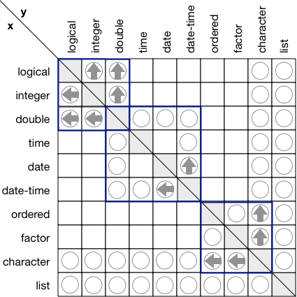

The short-term goal of vctrs specify the behavior of functions that combine different types of vectors. This will help reason about functions that combine different types of input (e.g. c(), ifelse(), rbind()). The vctrs type system encompasses base vectors (e.g. logical, numeric, character, list), S3 vectors (e.g. factor, ordered, Date, POSIXct), and data frames; and can be extended to deal with S3 vectors defined in other packages, as described in vignette("s3-vectors").
Understanding and extending vctrs requires some effort from developers, but it is our hope that the package will be invisible to most users. Having an underlying theory that describes what type of thing a function should return will mean that you can build up an accurate mental model from day-to-day use, and you will be less surprised by new functions.
In the longer-term, vctrs will become the home for tidyverse vector functions that work with logical and numeric vectors, and vectors in general. This will make it a natural complement to stringr (strings), lubridate (date/times), and forcats (factors), and will bring together various helpers that are currently scattered across packages, ggplot2::cut_number(), dplyr::coalesce(), and tidyr::fill(). In the very long-term, vctrs might provide the basis for a type system for vectors that could help automate documentation and argument checking.
vctrs has few dependencies and is suitable for use from other packages. (vctrs has a transitional dependency on tibble. Once vctrs is extensible all tibble related code will move into the tibble package.)
Motivation
The primary motivation comes from two separate, but related problems. The first problem is that base::c() has rather undesirable behaviour when you mix different S3 vectors:
# combining factors makes integers
c(factor("a"), factor("b"))
#> [1] 1 1
# even if you combine with a string
c("a", factor("a"))
#> [1] "a" "1"
# combing dates and date-times give incorrect values
dt <- as.Date("2020-01-1")
dttm <- as.POSIXct(dt)
c(dt, dttm)
#> [1] "2020-01-01" "4321940-06-07"
c(dttm, dt)
#> [1] "2020-01-01 00:00:00 UTC" "1970-01-01 05:04:22 UTC"
# as do combining dates and factors
c(dt, factor("a"))
#> [1] "2020-01-01" "1970-01-02"
c(factor("a"), dt)
#> [1] 1 18262This behaviour arises because c() has dual purposes: as well as it’s primary duty of combining vectors, it has a secondary duty of stripping attributes. For example, ?POSIXct suggests that you should use c() if you want to reset the timezone. A detailed comparison of vctrs vs base R behaviour can be found in vignettes("vctrs-vs-base.Rmd")
The second problem is that dplyr::bind_rows() is not extensible by others. Currently, it handles arbitrary S3 classes using heuristics, but these often fail, and it feels like we really need to think through the problem in order to build a principled solution. This intersects with the need to cleanly support more types of data frame columns including lists of data frames, data frames, and matrices.
Usage
Base vectors
vec_c() works like c(), but has stricter coercion rules:
vec_c(TRUE, 1)
#> [1] 1 1
vec_c(1L, 1.5)
#> [1] 1.0 1.5
vec_c(1.5, "x")
#> Error: No common type for double and character
#> Backtrail:
#> ─withCallingHandlers(...)
#> ─vec_c(1.5, "x")
#> ─vec_ptype(!!!args, .ptype = .ptype)
#> ─reduce(ptypes, vec_type2, .init = unknown())
#> ─Reduce(f, .x, init = .init)
#> ─f(init, x[[i]])
#> ─vec_type2.double.default(x, y, ...)
#> ─stop_incompatible_type(x, y)
#> ─stop_incompatible(...)Unlike c(), you can optionally specify the desired output class by supplying a prototype, or ptype, for short:
vec_c(1, 2, .ptype = integer())
#> [1] 1 2
vec_c(1, "x", .ptype = character())
#> [1] "1" "x"
vec_c(1, "x", .ptype = list())
#> [[1]]
#> [1] 1
#>
#> [[2]]
#> [1] "x"This supports a much wider range of casts (more on that below) than the automatic coercions, but it can still fail:
What is a prototype?
Internally, vctrs represents the class of a vector with a 0-length subset. We call this a prototype, because it’s a miniature version of the vector, that contains all of the attributes but none of the data. Conveniently, you can create many prototypes using existing base functions (e.g, double(), factor(levels = c("a", "b"))).
You can use vec_ptype() to create a prototype from an existing object. It has a print method that summarises the prototype:
vec_ptype(letters)
#> prototype: character
vec_ptype(1:50)
#> prototype: integer
vec_ptype(list(1, 2, 3))
#> prototype: listSome protoypes have parameters that affect their behaviour. These are displayed where possible:
# Factors display a hash of their levels; this lets
# you distinguish different factors at a glance
vec_ptype(factor("a"))
#> prototype: factor<127a2>
vec_ptype(factor("b"))
#> prototype: factor<ddf10>
# Date-times display their timezone
vec_ptype(Sys.time())
#> prototype: datetime<local>
# difftimes display their units
vec_ptype(as.difftime(10, units = "mins"))
#> prototype: time<mins>vctrs provides the unknown() class to represent vectors of unknown type:
Coercion and casting
vctrs defines the relationship between classes with two functions: vec_type2() and vec_cast(). vec_type2() is used for implicit coercions: given two classes, it returns the common class if it exists, or otherwise throws and error. vec_type2() is commutative, associative, and has an identity element, unknown().
The easiest way to explore coercion is to give multiple arguments to vec_ptype(). It uses vec_type2() to find the common type and displays the results in a convenient form:
vec_ptype(integer(), double())
#> prototype: double
vec_ptype(Sys.Date(), Sys.time())
#> prototype: datetime<local>
# no common type
vec_ptype(factor(), Sys.Date())
#> Error: No common type for factor<> and date
#> Backtrail:
#> ─withCallingHandlers(...)
#> ─vec_ptype(factor(), Sys.Date())
#> ─reduce(ptypes, vec_type2, .init = unknown())
#> ─Reduce(f, .x, init = .init)
#> ─f(init, x[[i]])
#> ─vec_type2.factor.default(x, y, ...)
#> ─stop_incompatible_type(x, y)
#> ─stop_incompatible(...)vec_cast() is used for explicit casts: given a value and a class, it casts the value to the class or throws an error stating that the cast is not possible. If a cast is possible in general (i.e. double -> integer), but information is lost for a specific input (e.g. 1.5 -> 1), it will generate a warning.
# Cast succeeds
vec_cast(c(1, 2), integer())
#> [1] 1 2
# Cast loses information
vec_cast(c(1.5, 2.5), integer())
#> Warning: Lossy cast from double to integer
#> Locations: 1, 2
#> [1] 1 2
# Cast fails
vec_cast(c(1.5, 2.5), factor("a"))
#> Error: Can't cast double to factor<127a2>
#> Backtrail:
#> ─withCallingHandlers(...)
#> ─vec_cast.factor.default(c(1.5, 2.5), factor("a"))
#> ─stop_incompatible_cast(x, to)
#> ─stop_incompatible(...)The set of possible casts is a subset of possible automatic coercions. The following diagram summarises both casts (arrows) and coercions (circles) for all base types supported by vctrs:

Factors
Note that the commutativity of vec_type2() only applies to the prototype, not the attributes of the prototype. Concretely, the order in which you concatenate factors will affect the order of the levels in the output:
Matrices and arrays
Any bare vector can have a dim attribute which turns it into a matrix or array. The prototype of a matrix or array its a 0-row subset.
vec_ptype(array(1, c(1, 10)))
#> prototype: double[,10]
vec_ptype(array(1, c(1, 10, 10)))
#> prototype: double[,10,10]A pair of arrays only has common type if the dimensions match:
vec_ptype(array(TRUE, c(2, 10)), array(1, c(5, 10)))
#> prototype: double[,10]
vec_ptype(array(TRUE, c(2, 10)), array(1, c(5, 1)))
#> Error: No common type for logical[,10] and double[,1]
#> Shapes are not compatible
#> Backtrail:
#> ─withCallingHandlers(...)
#> ─vec_ptype(array(TRUE, c(2, 10)), array(1, c(5, 1)))
#> ─reduce(ptypes, vec_type2, .init = unknown())
#> ─Reduce(f, .x, init = .init)
#> ─f(init, x[[i]])
#> ─vec_type2.logical.double(x, y, ...)
#> ─dim_match(double(), x, y)
#> ─dim_common(x, y)
#> ─stop_incompatible_type(x, y, details = "Shapes are not compatible")
#> ─stop_incompatible(...)
vec_ptype(array(TRUE, c(2, 10)), array(1, c(5, 10, 1)))
#> Error: No common type for logical[,10] and double[,10,1]
#> Dimensionality must be equal
#> Backtrail:
#> ─withCallingHandlers(...)
#> ─vec_ptype(array(TRUE, c(2, 10)), array(1, c(5, 10, 1)))
#> ─reduce(ptypes, vec_type2, .init = unknown())
#> ─Reduce(f, .x, init = .init)
#> ─f(init, x[[i]])
#> ─vec_type2.logical.double(x, y, ...)
#> ─dim_match(double(), x, y)
#> ─dim_common(x, y)
#> ─stop_incompatible_type(x, y, details = "Dimensionality must be equal")
#> ─stop_incompatible(...)Data frames
Data frames are defined by the names and prototypes of their columns:
df1 <- data.frame(x = TRUE, y = 1L)
vec_ptype(df1)
#> prototype: data.frame<
#> x: logical
#> y: integer
#> >
df2 <- data.frame(x = 1, z = 1)
vec_ptype(df2)
#> prototype: data.frame<
#> x: double
#> z: double
#> >The common type of two data frames is the common type of each column that occurs in both data frame frames, and the union of the columns that only occur in one:
Like factors, the order of variables in the data frame is not commutative, and depends on the order of the inputs:
vec_ptype(df1, df2)
#> prototype: data.frame<
#> x: double
#> y: integer
#> z: double
#> >
vec_ptype(df2, df1)
#> prototype: data.frame<
#> x: double
#> z: double
#> y: integer
#> >Data frames are interesting because they are recursive: a data frame can have a column that is also a data frame. vctrs knows how to handle these too:
df3 <- data.frame(x = 2L)
df3$a <- data.frame(a = 2, b = 2)
vec_ptype(df3)
#> prototype: data.frame<
#> x: integer
#> a:
#> data.frame<
#> a: double
#> b: double
#> >
#> >
df4 <- data.frame(x = 4)
df4$a <- data.frame(a = FALSE, b = 3, c = "a")
vec_ptype(df4)
#> prototype: data.frame<
#> x: double
#> a:
#> data.frame<
#> a: logical
#> b: double
#> c: factor<127a2>
#> >
#> >
vec_ptype(df3, df4)
#> prototype: data.frame<
#> x: double
#> a:
#> data.frame<
#> a: double
#> b: double
#> c: factor<127a2>
#> >
#> >List of
vctrs provides a new class that represents a list of elements with constant prototype but varying lengths. This is an interesting contrast to a data frame which is a list of elements with constant length, but varying prototypes.
x1 <- list_of(1:3, 3:5, 6:8)
vec_ptype(x1)
#> prototype: list_of<integer>
# This type is enforced if you attempt to modify the vector
x1[[4]] <- c(FALSE, TRUE, FALSE)
#> Error: Invalid index: out of bounds
x1[[4]]
#> Error: Invalid index: out of bounds
x1[[5]] <- factor("x")
#> Error: Can't cast factor<5a425> to integer
#> Backtrail:
#> ─withCallingHandlers(...)
#> ─`[[<-.vctrs_list_of`(`*tmp*`, 5, value = structure(1L, .Label = "x", class = "factor"))
#> ─vec_cast.integer.default(value, attr(x, "ptype"))
#> ─stop_incompatible_cast(x, to)
#> ─stop_incompatible(...)This provides a natural type for nested data frames:
Tidyverse functions
There are a number of tidyverse functions that currently need to do type coercion. In the long run, their varied and idiosyncratic approaches will be replaced by the systematic foundation provided by vctrs.
# Data frame functions
dplyr::inner_join() # and friends
dplyr::bind_rows()
dplyr::summarise()
dplyr::mutate()
tidyr::gather()
tidyr::unnest()
# Vector functions
purrr::flatten()
purrr::map_c()
purrr::transpose()
dplyr::combine()
dplyr::if_else()
dplyr::recode()
dplyr::case_when()
dplyr::coalesce()
dplyr::na_if()
dplyr::between()